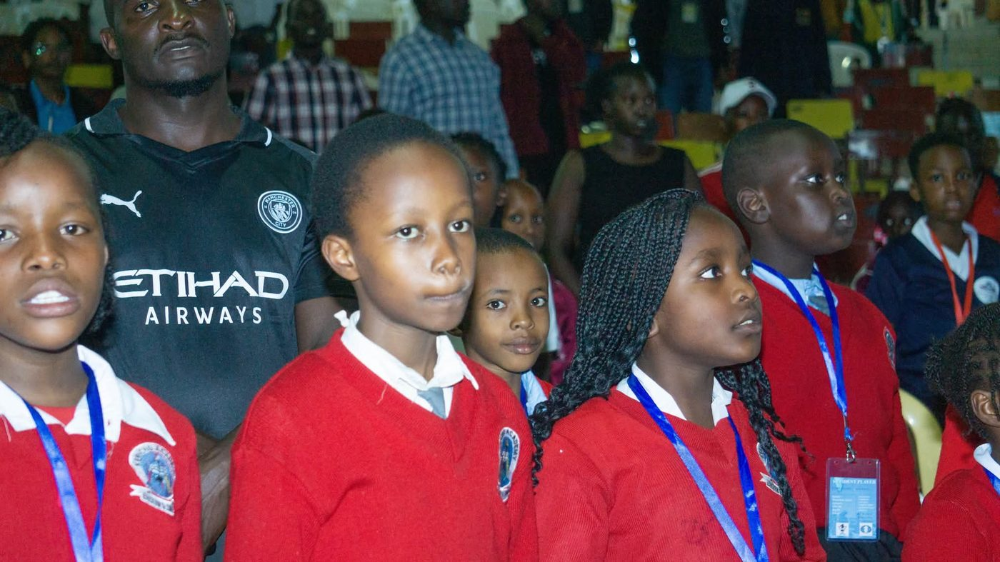

Coaching
Structured school coaching
Weekly in-school sessions that build a full club: curriculum, ladders and house tournaments. Fundamentals first, tactics second, composure always.

Shem Meso has spent years turning quiet Kericho classrooms into competitive chess clubs. It starts with how each piece thinks, not just how it moves.
Sessions run inside partner schools, fitted around the timetable, with materials and a clear progression path for every learner. On fixture days, Boards 1 to 4 stream live on this site.
Meet the coach and the office bearersEvery programme fits a real school week, not the other way round — and every learner can see the next step in front of them.
Weekly in-school sessions that build a full club: curriculum, ladders and house tournaments. Fundamentals first, tactics second, composure always.
Fixtures across Kericho County with real clocks, real scoresheets and medals in eight age categories — plus a running honour roll.
Board 1 with live clocks, an evaluation bar, the move list and a spectator feed — so parents at home never miss a round.
Fixture dates, club nights and the next big one on the circuit. Reminders go out on WhatsApp.
Seven Swiss rounds across eight age categories, run with clocks and scoresheets. Boards 1 to 4 stream live all day.
First round inThe internal ladder that keeps every learner match-sharp between fixtures, played in the club room and streamed from Board 1.
Two counties, ten boards, one stream — the fixture every learner in the county talks about. Date to be confirmed for Term 3.
A sample of last season's circuit standings. Full tables are shared in the academy's WhatsApp group after every fixture.
Pick the track that fits your school, your child, or your season. All four follow the same four-phase method.
Weekly in-school sessions with a full club setup, ladders and house tournaments.
A personal study plan built around the learner's own games, analysed after every session.
Openings, clock management and simulated match play under real time pressure.
The academy's weekly internal ladder, streamed from the club room.
A head teacher, a parent and one of the U-14 squad on what the club has changed.
Our library used to empty at lunch. Now the queue for Shem's boards runs out the door. Learners plan their whole week around chess club.
Mrs. M. Korir
Head Teacher · KerichoMy son came home explaining backwards pawns at dinner. Three months later he finished third in the U-12 circuit. Money well spent.
D. Bett
Parent · LiteinCoach Shem taught us that losing a queen is not losing a game. I stopped panicking over the board and started winning endgames.
Faith C., 14
U-14 Squad · Season 25Fixtures, club nights and what to watch next, straight from the season calendar.
Seven Swiss rounds across eight age categories. Entry via M-Pesa Paybill 880100, confirmed with Shem on WhatsApp.
Register a learnerGladys Langat travelled with Team Kenya to the 46th FIDE Chess Olympiad in Samarkand, Uzbekistan — the same standard of organisation we bring to every Kericho fixture.
See the Samarkand galleryBoard 1 streams from the club room every Saturday. Ask on WhatsApp for a reminder the moment it goes live.
Open the broadcast roomSchool coaching is quoted per term, private lessons per session. This form composes a WhatsApp message with your answers — nothing is stored on this site, and you press send yourself.
Tell us the learner's age, school and goal. Shem maps the right track from there — usually the same day.